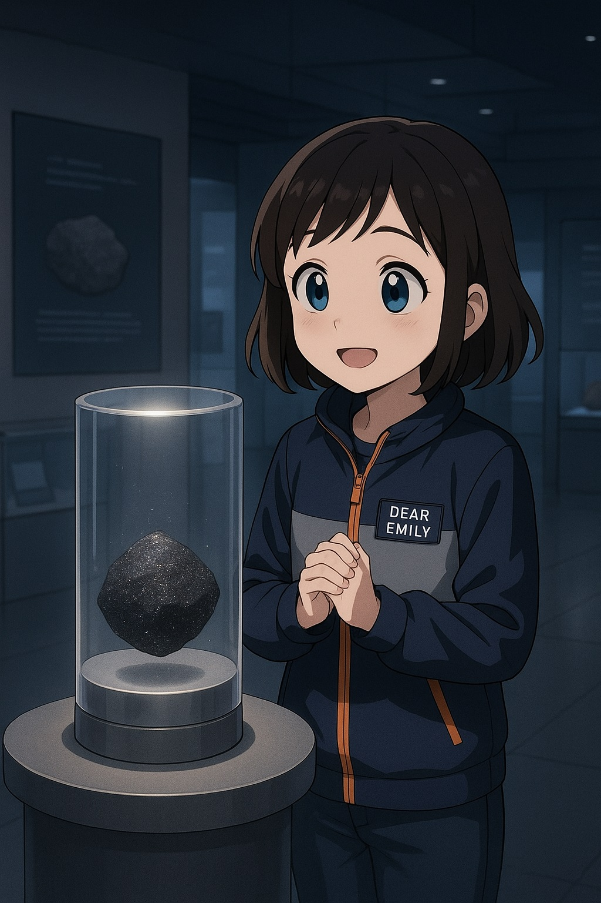

リュウグウからの手紙｜エミリー、はやぶさ2に星の声を聴く
記憶を運ぶカプセル
「この小さな黒い塊が、宇宙を旅してきたの？」
エミリーは、展示室の中央に置かれたカプセルをそっと見つめた。2020年12月、南オーストラリアの砂漠に舞い戻った探査機はやぶさ2のカプセル。火の玉のように燃えながら、地球の大気圏を駆け抜け、やがて静かに、しかし確かに、地球に“帰ってきた”。
そのカプセルの中には、小惑星リュウグウから採取された砂粒が眠っている。人類が、遠い天体の「記憶」に触れた証だ。
ガラス越しに見つめながら、エミリーは静かに呟く。「このカプセルは、どんな星の声を聴いてきたの？」
宇宙と交わした約束
小惑星リュウグウ。地球からおよそ3億キロの彼方にある、直径約900メートルの暗い岩のかたまり。名前は、日本神話に登場する「竜宮城」から名づけられた。
2018年、はやぶさ2はこのリュウグウに到着した。探査機は地表にタッチダウンし、サンプルを採取するだけでなく、小型ロボットたちを放出した。MINERVA-IIやMASCOTといった仲間たちが、リュウグウの地面を跳ね、転がりながら観測を行った。
それは、まるで遠い世界に手紙を届けに行ったような、静かな冒険。
宇宙と交わした約束は、たったひとこと──「また、戻ってくる」。
旅する探査機と、旅を夢見る少女
宇宙を旅する機械。エミリーは、幼いころに描いた宇宙飛行士の夢を思い出していた。
「人じゃなくても、宇宙を旅できるんだ」
カプセルを見つめながら、ふとそんな気持ちがよぎる。
はやぶさ2は、地球を旅立ち、宇宙をめぐり、任務を終えてもなお──帰ってきたあとも──研究者たちと“会話”を続けている。
「旅って、“行くこと”じゃなくて、“戻ってきたもの”を誰かに届けることなのかもしれない」
エミリーは星図を取り出し、リュウグウの軌道をなぞる。いま、あの小惑星は地球から遠ざかっている。でも、彼女の心はあの場所に手紙を送りたがっていた。
星は記憶のなかに
夜。エミリーはベランダに出て、夏の星空を見上げた。こと座、わし座、そして白鳥座──夏の大三角が、空に淡く浮かんでいる。
「あの光は、どこまで届いているんだろう」
はやぶさ2が旅をしていた頃の記録映像を、スマートフォンでそっと流す。無音の宇宙。ゆっくりと進む機体。そして、着陸の瞬間に立ち会った小さなロボットたち。
「ねえ、宇宙って、記憶でできていると思わない？」
誰にともなくつぶやきながら、エミリーはそっとノートを開く。
そこにはこう綴られていた。
星を見上げるたび、
誰かが残した旅の音が聴こえる。
わたしもいつか──
小さな記憶を、宇宙に託してみたい。